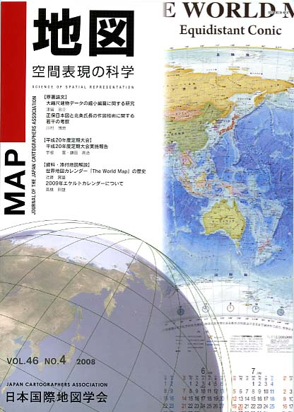
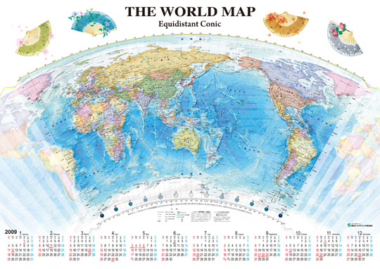
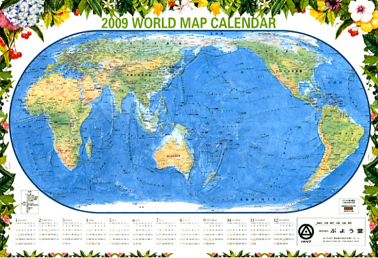

| 最 新 号 | バックナンバー | 添付地図目録 | 投 稿 規 程 |
Vol.46 No.4 （通巻１８４号） ２００８年
| 【原著論文】 | 大縮尺建物データの縮小編纂に関する研究 | 津留宏介 |
| キーワード：地図編集、縮小編纂、建物、ユニバーサルマップ | ||
| 正保日本図と北条氏長の作図技術に関する若干の考察 | 川村博忠 | |
| キーワード：正保日本図、北条氏長、日本図編集、「道度」徴収、一里目盛 | ||
| 【平成20年度定期大会】 | 平成20年度定期大会実施報告 | 宇根 寛・鎌田高造 |
| 【資料・添付地図解説】 | 世界地図カレンダー「The World Map」の歴史 | 近藤賀誉 |
| キーワード：世界地図、地図投影、正距方位図法、メルカトル図法、正距円錐図法 | ||
| 2009年エケルトカレンダーについて | 高橋則雄 | |
| キーワード：地図カレンダー、エケルト第4図法、KALTASIA1:2500万世界地図データ、地図表現 | ||
| 【特別会員のページ】 | 内外地図株式会社 | |
| 株式会社古今書院 | ||
| 【年間総目次】 | ||
| 【学会記事】 | ||
| 【添付地図】 | 世界地図カレンダー（東京カートグラフィック株式会社） | |
| 2009年エケルトカレンダー（株式会社武揚堂） | ||
|
≪No.46 No.4 表紙≫ |
|
|  |
|
|
|
≪No.46 No.4 添付地図−抜粋≫ |
| 
 本図を許可なく複製・利用することを禁止します。
|